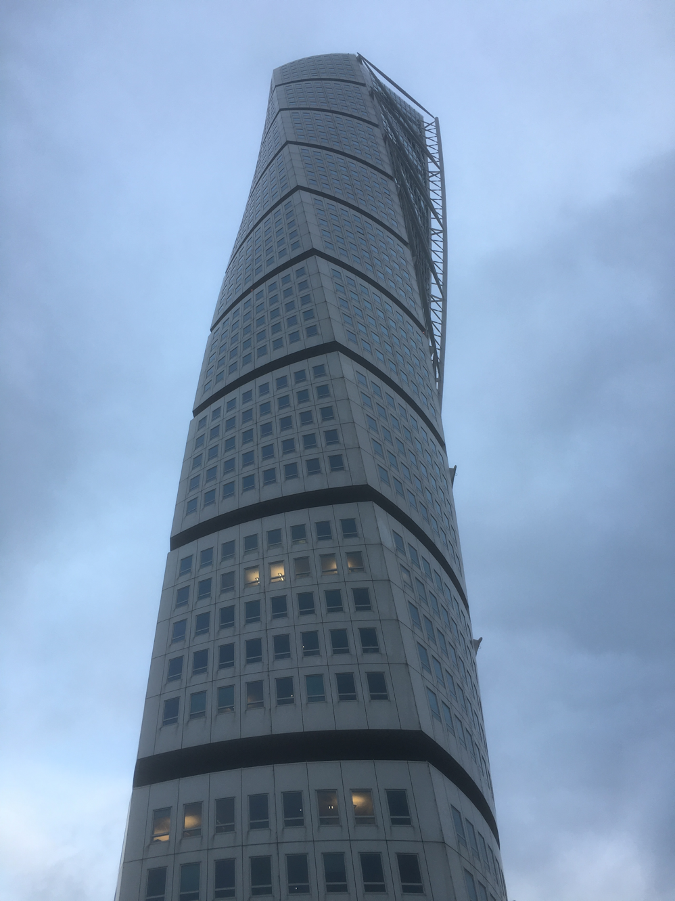
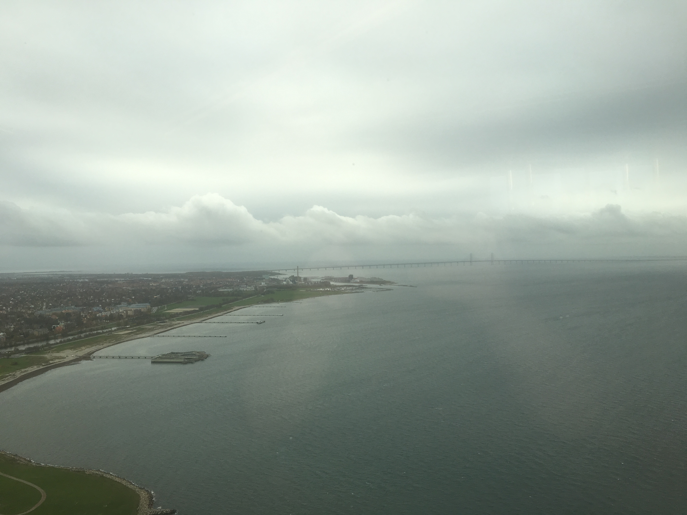

SwedAPL 2015
Vector 26:4, page 25
Introduction¶
This year’s SwedAPL meeting was held at the Turning Torso in Malmo, Sweden. The turning torso is the tallest building in the Nordic countries, at a height of 190 metres (623 feet). The meeting took place on the 53rd floor, the 2nd highest in the building.

The theme for Autumn’s SwedAPL meeting was web services and Gilgamesh Athoraya (Data Analytics) was our host.
Gilgamesh started off proceedings by welcoming the attendees to SwedAPL 2015, he went on to discuss that the SwedAPL name may be changed to something like ScandAPL, to reflect the Scandinavian presence at this meeting and the previous SwedAPL meetings. He then added that there were a variety of nationalities, of which included: Swedish, Danish, German, Serbian and British.
Morning presentations¶
Gilgamesh then discussed his topic, the implementation of web sockets in MiServer and Rumba. Gilgamesh demonstrated 3 ways in which he had used web sockets; a chat room, a collaborative block building grid and a table shown on a web front end that updated when something changed in the APL server.[1]
Next up was Joakim Hårsman from CompuGroup Medical, who spoke about his experiences of different implementations of SOAP web services, including a C++ solution, a .NET/Dyalog APL solution and a JavaScript solution, but also how they were being maintained.[2]
Just before lunch, we had Stephan Poßberg from Vallourec speak about using web services as a means of validating and distributing information across multiple systems within a company.
Lunch¶
The lunch took place on the 54th floor, unfortunately the weather wasn’t as clear as it could’ve been but a tremendous view nonetheless and the food was fantastic.

Afternoon presentations¶
After lunch, Morten Kromberg, CTO of Dyalog gave a talk on RESTful web services in MiServer. He spoke about how Dyalog are trying to make using MiServer to develop applications as similar to how the Windows Create tool set works as possible to make it easier to use. Morten also led a small workshop on RESTful Services in MiServer, spoke about the future of MiServer and about possibly making Rumba a part of MiServer.[3]
Leading on from Morten touching on Rumba, Gilgamesh decided to give a brief overview of Rumba with Paul Mansour (who built Rumba) attending via the web, also chipping in with information about Rumba as Gilgamesh spoke.[4]
Last up was Peter Simonsson from Aplensia, who told us of his and his team’s experiences of Web Services at Volvo Cars. He spoke about how the users have local executables which rely on web services to process and provide information that cannot be dealt with locally.[5]
Thank you¶
Thank you to all of the attendees and a special thanks to all of our speakers, it was a wonderful day and we look forward to seeing you at the next meeting.